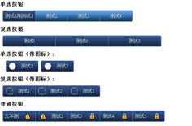
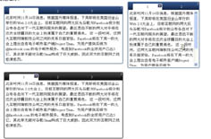

热门插件


来到这家公司差不多两年了，最开始转工作的时候，就想着不要再找做嵌入式的了，总感觉做嵌入式的就是一大堆看不懂的代码在那修改，运行起来。HOHO，居然跑起来了，问我为什么能跑起来，只能说：“我也不知道为什么就可以了”。其实只是我水平太差。
废话不说了，也没想到在这公司还要我写网页，还好一开始只是让我改改别人的，后来越改就越火，一大堆的< table >，改到我都头都大了。我火呀。就把布局改为DIV+CSS，布局我还会，javascript我可不怎么会，就上网找资料，加QQ群。在QQ群里听很多人问jQuery，一开始还不知道是什么，后来一了解，太爽了，也由此开始了我的jQuery生涯。